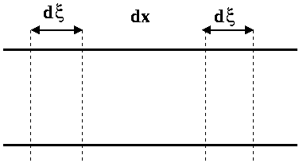
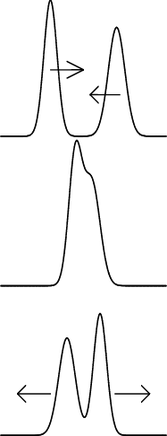
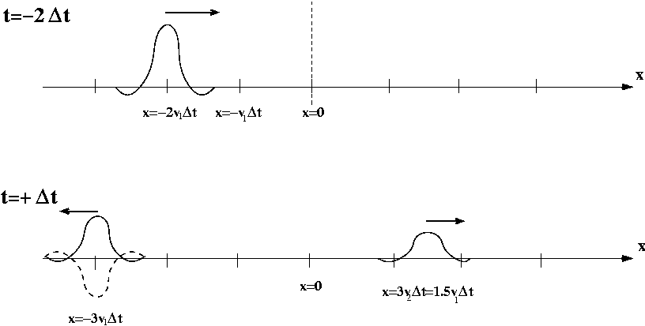
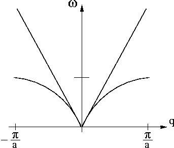
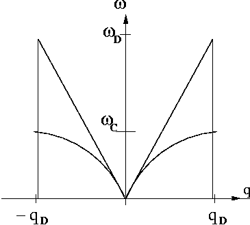

2. Approximation de la chaı̂ne continue¶
2.1 Equations du mouvement et solutions générales¶
2.1.1 détermination de \(\mathcal{J}\) et \(\mathcal{C}\)¶
- il est plus difficile de tordre de \(\Delta\theta\) une petite portion de fil qu'une grande; le couple à appliquer doit être plus grand. La constante de torsion est alors inversement proportionnelle à la longueur du morceau considéré.
-
On intègre entre \(x\) et \(x+a\) les quantités \(\mathcal{J}dx\) puis \(\frac{dx}{\mathcal{C}}\); on obtient :
\[\mathcal{J}a = J\]\[\frac{a}{\mathcal{C}} = \frac{1}{C}\]
2.1.2 équation d’onde - équation de d’Alembert¶
On considère une tranche \(\mathcal{T}\) d'épaisseur \(dx\).

On détermine les couples exercés de part et d'autre par le reste de la chaîne en considérant deux morceaux d'épaisseur \(d\xi\) de chaque côté.
Les tronçons compris entre \(x-d\xi\) et \(x\) et entre \(x+dx\) et \(x+dx+d\xi\) exercent respectivement sur \(\mathcal{T}\) les couples :
On peut simplifier par \(d\xi\).
On applique le théorème du moment cinétique à cette tranche, on obtient :
On simplifie par \(dx\) et l'on obtient l'équation de d'Alembert :
équation de d'Alembert
2.1.3 résolution¶
2.1.3.1 ¶
On peut considérer qu'il s'agit ici d'une question de cours; pour résoudre l'équation de d'Alembert on effectue le changement de variable suivant : \(X = t - \frac{x}{v}\) et \(Y = t + \frac{x}{v}\); \(\theta(x,t)\) devient alors \(\phi(X,Y)\).
On applique le théorème de composition des fonctions de plusieurs variables :
On continue pour obtenir les dérivées secondes :
Les deux dernières équations permettent d'écrire l'équation de d'Alembert en variables X, Y :
remarque
Pour mieux comprendre l'origine du changement de variable proposé par l'énoncé on peut s'apercevoir que l'équation de d'Alembert peut être réécrite sous la forme :
Cela est possible car les opérateurs \(\frac{\partial}{\partial t}\) et \(\frac{\partial}{\partial x}\) commutent. On voit alors apparaître l'interet des variables \(t - \frac{x}{v}\) et \(t + \frac{x}{v}\).
2.1.3.2 ¶
On intègre cette équation par rapport à \(Y\) :
En appelant \(F(X)\) une primitive de \(f(X)\) et en integrant par rapport à \(X\) :
\(F\) et \(G\) sont des fonctions dérivables d'une seule variable.
2.1.3.3 ¶
Par exemple, si \(G\) est nulle \(\theta (x,t) = F(t-\frac{x}{v})\). On sait que mathématiquement la fontion \(t \rightarrow h(t-t_0)\) a la même courbe représentative que la fonction \(t \rightarrow h(t)\) mais translatée de \(t_0\) le long de l'axe des \(t\). Si l'on pose \(t_0 = \frac{x}{v}\) on peut interpréter \(F(t-\frac{x}{v})\) comme un signal se propageant vers les \(x\) croissants.

Finalement \(\theta\) est la somme de deux signaux se propageant en sens inverse.
2.1.4 densité linéique d’énergie mécanique¶
Considérons un tronçon de longueur \(dx\) de la chaîne située entre les abscisses \(x\) et \(x+dx\). Son énergie mécanique est la somme de deux termes :
- énergie cinétique : au premier ordre en \(dx\), la vitesse de rotation est uniforme dans la tranche et est égale à \(\frac{\partial \theta}{\partial t}(x,t)\); soit \(dE_c = \frac{\mathcal{J}dx}{2} \big(\frac{\partial \theta}{\partial t}\big)^2(x,t)\)
- énergie potentielle : c'est l'énergie que doit fournir un opérateur extérieur pour tordre réversiblement la tranche, c'est à dire l'opposé du travail des forces de torsion lors de l'opération suivante : l'angle en \(x\) étant fixé à \(\theta(x,t)\) on fait passer l'angle en \(x+dx\) de \(\theta(x,t)\) à \(\theta(x+dx,t)\); on obtient \(dE_p = - \int_{\theta(x,t)}^{\theta(x+dx,t)} \frac{\mathcal{C}}{dx}(\alpha - \theta(x,t))d\alpha\) soit, au premier ordre en dx : \(dE_p = \frac{\mathcal{C}dx}{2}\big(\frac{\partial \theta}{\partial x}\big)^2(x,t)\)
On obtient l'expression de la densité linéique d'énergie :
L'expression comporte deux termes quadratiques remarquablement symétriques; on passe de l'un à l'autre en changeant \(\mathcal{J}\) en \(\mathcal{C}\) et le temps en l'espace.
On dérive par rapport au temps :
On utilise l'équation aux dérivées partielles du mouvement pour transformer le premier terme, alors :
Ainsi \(\mathcal{G}\) est définie, à une fonction du temps près, par :
2.1.5 interprétation physique¶
Il s'agit là d'une équation de continuité de l'énergie. \(\mathcal{G}(x,t)\) représente un flux d'énergie qui passe à travers une section du fil en \(x\) (dans le sens des \(x\) croissants) par unité de temps (ou encore la puissance transmise dans le sens des \(x\) croissants si \(\mathcal{G}(x,t)>0\) en \(x\) à \(t\)).
En intégrant la relation sur une portion de fil de longueur \(dx\), on peut écrire une équation de conservation de l'énergie.
Autres domaines de la physique :
- en électricité : \(div \overrightarrow{j_{elec}} + \frac{\partial \rho}{\partial t} = 0\) (conservation de la quantité de charge)
- en mécanique des fluides : \(div \overrightarrow{j} + \frac{\partial \rho}{\partial t} = 0\) (conservation de la quantité de matière)
- en électro-magnétisme : \(div \overrightarrow{\pi} + \overrightarrow{j}.\overrightarrow{E} + \frac{\partial \omega}{\partial t} = 0\) (conservation de l'énergie électromagnétique, théorème de Poynting)
2.1.6 cas particulier d’une onde allant dans le sens des \(x\) croissants¶
\(\theta(x,t) = F(t-\frac{x}{v})\)
On vérifie aisément que les densités d'énergie cinétique et élastique sont égales :
On obtient alors :
2.1.7 cas particulier d’une onde allant dans le sens des \(x\) decroissants¶
Il suffit de changer \(x\) en \(-x\) dans les expressions précédentes; on obtient :
et
On constate ainsi que l'on a inversé le sens du flux d'énergie en changeant le sens de progation de l'onde.
2.1.8 cas général¶
Etant donnée la solution générale \(\theta(x,t) = F(t-\frac{x}{v}) + G(t+\frac{x}{v})\) après quelques calculs simples il reste :
et
On constate que lorsque deux signaux se propagent en sens inverse sur le fil :
- les densités linéiques d'énergie mécanique (respectives) s'ajoutent.
- les flux (algébriques) d'énergie transportée se retranchent.
2.2 traversée d’une discontinuité¶
2.2.1 cas d’une onde se propageant vers les \(x\) croissants¶
On considère une onde incidente décrite par :
-
en \(x=0\), on change de milieu de propagation; on peut donc s'attendre à des phénomènes de réflexion et réfraction.
-
analogies
- [en optique] (et plus généralement en électro-magnétisme) lorsqu'une onde lumineuse rencontre une surface séparant deux milieux d'indices différents. - [en mécanique des fluides :] onde de surface se propageant dans un canal (voir sujet X93 M' et P'), ... - [en acoustique :] corde vibrante, tube sonore, ultrason (échographie médicale), ... -
dioptre
-
conditions aux limites
- en \(x= + \infty\) : on suppose qu'il n'y a pas de source qui excite la corde en torsion, donc \(K = 0\).
- en \(x = 0\) : le fil ne se déchire pas; \(\theta\) est continu (1) et le flux d'énergie se conserve (2) :
\[\begin{align} F(t) + G(t) &= H(t) \\ \mathcal{J}_1 v_1 (F'(t))^2 - \mathcal{J}_1 v_1 (G'(t))^2 &= \mathcal{J}_2 v_2 (H'(t))^2 \end{align}\]
2.2.2 résolution¶
-
expression de \(G\) et \(H\)
- On dérive (1) : \(F'+G' = H'\)
- On factorise (2) : \(z_1 (F'+G')(F'-G') = z_2 H^{'2}\)
On résout en fonction de \(F'(t)\) puis on intègre :
soit
La relation (1) impose \(C_1=C_2\); d'autre part on peut choisir \(C_1=C_2=0\) cela revient à changer l'origine de \(\theta\), soit :
- coefficients de réflexion et de transmission en amplitude
en \(x=0\) :
-
signe de \(r_{12}\)
- si \(z_2 \rightarrow 0\)
Il n'y a pas de puissance transmise dans le milieu \(2\)!
Comme \(z_2 = \sqrt{\mathcal{J}_2 \mathcal{C}_2 }\) cela signifie que \(\mathcal{C}_2\) tend vers zero (ou \(\mathcal{C}_2\)) : tout se passe comme s'il n'y avait pas de fil dans le milieu 2!! Soit encore, comme si l'extremité en \(x=0\) du fil du milieu 1 était libre. Lorsque l'énergie incidente arrive en \(x=0\), elle ne peut être transmise, elle est entièrement réfléchie.
-
signe de \(r_{12}\)
- si \(z_2 \rightarrow \infty\)
Il n'y a pas de puissance transmise dans le milieu \(2\)!
Comme \(z_2 = \sqrt{\mathcal{J}_2 \mathcal{C}_2 }\) devient infini, cela signifie que le milieu devient infiniment inerte ( \(\mathcal{J}_2 \to \infty\)) ou infiniment rigide ( \(\mathcal{C}_2 \to \infty\)); dans tous les cas, le fil du milieu \(2\) est immobile, en particulier en \(x=0\).
Lorsque \(z_1 = z_2\), on dit qu'il y a adaptation d'impédance car la puissance transmise (\(\mathcal{G}_t\)) est égale à la puissance incidente (\(\mathcal{G}_t\)); la puissance réfléchie étant nulle. Du point de vue du transfert énergétique tout se passe comme si on avait qu'un seul milieu de propagation. C'est idéal!
- analogies
Le même changement de signe pour la réflexion d'une OEM sur un dioptre séparant deux milieux d'indice optique \(n_1\) et \(n_2\) :
2.2.3 étude énergétique¶
- coefficients \(R_{12}\) et \(T_{12}\)
On définit ces deux coefficients à l'aide de la puissance transportée associée à chacun des signaux :
- en fonction de \(z_1\) et \(z_2\) :
- conservation du flux d'énergie en \(x=0\) :
2.2.4 étude qualitative de la traversée du dioptre¶

Sur la figure du dessus, on observe une impulsion incidente à t=-2\(\Delta\)t, et sur la figure du dessous, on a les impulsions réfléchie et transmise à t=3\(\Delta\)t
La courbe en pointillés correspond au cas où \(z_2 > z_1\), i.e. \(r_{12}<0\).
-
cas où \(z_1=z_2\) :
On a \(r_{12}=0\) et \(t_{12}=1\) : il n'y a pas de réflexion, le signal incident est entièrement transmis sans déformation. Tout se passe comme s'il n'y avait qu'un seul milieu de propagation; on parle du phénomène d'adaptation d'impédance.
2.3 Modes propres de la chaı̂ne continue¶
2.3.1 solutions propagatives¶
- solution en ondes progressives :
On cherche des solutions de la forme \(\mathcal{R}e(A e^{i(qx-\omega t)})\) Cette fonction convient si et seulement si :
Il reste la condition :
- relation de dispersion du modèle continu :

En I-1-6-a on avait :
Effectuons un développement limité au voisinage de \(q=0\) de \(f(q)\) :
on montre ainsi que les deux courbes sont tangentes en \(q=0\).
2.3.2 comparaison des modèles chaı̂ne discrète et chaı̂ne continue¶
-
\(f_c\) n'est pas périodique en \(q\). La première zone de Brillouin est transformée en un V.
-
Faisons tendre le pas élémentaire \(a\) de la chaîne discrête vers 0 et développons \(f(q)\) au premier ordre en a (pour \(q>0\) fixé) :
- Réécrivons chacun des termes de l'équation de propagation discrète en développant à l'ordre deux en \(a\) :
L'équation discrète devient alors :
Soit finalement, en divisant par \(a\):
2.3.3 chaı̂ne continue de longueur finie¶
- Le résultat de I-2-1-a reste vrai ici : l'équation de propagation continue est valable pour la chaîne refermée sur elle-même.
La condition BVK permet d'obtenir les vecteurs d'onde propres :
\(q\) appartient au même ensemble discret qu'en I-2-1-a en remplacant \(N a\) par \(L\).
- On retrouve les résultats de la première partie : \(N\) valeurs de \(q\) dans l'intervalle \(\big] -\frac{N\pi}{L} , \frac{N\pi}{L} \big]\).
2.3.4 modèle de Debye¶

On tronque la relation de dispersion à l'intervalle \(\big] -\frac{N\pi}{L} , \frac{N\pi}{L} \big]\).
-
\(\omega_D = \frac{\pi}{a} v\)
-
\(\omega_D = \frac{\pi}{2}\omega_c\)
\(f_D(q)\) est la tangente à l'origine de \(f(q)\) qui est un sinus; cela explique le facteur \(\frac{\pi}{2}\).
2.3.5 validité du modèle de Debye¶
-
\(\lambda_D = \frac{2\pi}{q_D} = 2a\)
-
Le problème réside dans le fait que la description continue de la chaîne utilise une loi linéaire \(\omega = v |q|\) dans la zone de Brillouin alors que les phénomènes ne le sont pas.
La description continue de la chaîne discrète est acceptable au voisinage de \(qa=0\) (au milieu de la zone de Brillouin) où les deux relations de dispersion sont tangentes.
- Le modèle de Debye donne des solutions \(F(t-\frac{x}{v})\) qui représente des signaux se propageant sans se déformer (l'amplitude et la forme de \(F\) restent les mêmes). Pour que ces solutions décrivent correctement les ondes observées sur la chaîne discrète il faut \(qa << 1\), c'est à dire que l'extension spatiale \(\Delta x\) vérifie : \(\Delta x \gg a\) et \(\Delta t \gg \frac{a}{v}.\)
2.4 Etude du comportement d’un paquet d’onde¶
2.4.1 propagation sans déformation¶
Dans le modèle de Debye, une onde progressive se dirigeant vers les \(x\) croissants est décrite mathématiquement par : \(F(t-\frac{x}{v})\) où \(F\) est une fonction d'une seule variable déterminée une fois pour toute au moment de l'émission en bout de chaîne (\(x \rightarrow - \infty\)). \(F\) ne change pas au cours de la propagation : il n'y a pas de déformation.
2.4.2 expression mathématique de la propagation sans déformation¶
- Utilisons la relation de dispersion du modèle de Debye : \(\omega = vq\) pour \(q>0\); alors :
Soit
- la phase associée au vecteur d'onde \(q\) est \(q(x-vt)\)
- la phase associée au vecteur d'onde \(q'\) est \(q'(x-vt)\)
Pour que ces deux vecteur d'onde soient en phase, quelques soient \(q\) et \(q'\) choisis dans le paquet d'onde, il est nécessaire et suffisant que \(x-vt=0\), soit \(x(t)=vt\).
2.4.3 centre du paquet d’onde¶
-
Le centre du paquet d'onde (et donc le paquet d'onde lui-même) est en mouvement uniforme de translation.
-
\(v_g = v_{\phi} = v\) : tous les composantes du paquet ont des phases qui se déforment au même rythme (à la vitesse de phase).
2.4.4 réflexion - transmission d’une onde incidente sinusoı̈dale¶
On considère l'onde incidente :
La présence du dioptre en \(x=0\) donne naissance à une onde refléchie et une onde transmise dont on calcule les amplitudes; on détermine ensuite les expressions complètes de ces deux ondes :
On déduit la solution complète :
solution
2.4.5 réflexion - transmission d’un paquet d’onde quelconque¶
- le paquet d'ondes sinusoïdales peut s'écrire, après avoir effectué le changement de variable \(\omega = qv\) :
en ayant posé : \(\mathcal{B}_i(\omega) = \frac{\mathcal{A}(\frac{\omega}{v})}{v}\).
- L'équation de propagation est linéaire : cela signifie que la solution \(\theta(x,t)\) est la somme des solutions engendrées par chacune des ondes sinusoïdales du paquet d'onde incident. On procède de la même manière qu'à la question précédente : on détermine les amplitudes des ondes réfléchie et transmises sachant que les coefficients de réflexion et transmission sont indépendants de \(\omega\):
On obtient finalement :
solution
-
Le paquet d'onde incident se translate, à vitesse constante, dans le sens des \(x\) croissants. On le suppose d'extension temporelle \(\Delta t\). A la date \(t=-\frac{\Delta t}{2}\), le front du paquet arrive en \(x=0\) : la réflexion et la transmission commencent.
-
Supposons \(\mathcal{B}_i(\omega)\) non nul dans la bande de pulsations comprises entre \(\omega_0-\frac{\Delta \omega}{2}\) et \(\omega_0+\frac{\Delta \omega}{2}\). Supposons que le centre du signal à \(t=t_0\) soit en \(x_0\) : toutes les ondes du paquet sont en phase.
Le signal en \(x_0\) devient nul quand toutes les ondes se sont déphasées, c'est à dire à la date \(t=t_0+\Delta t\) où \(\Delta t\) est la durée de l'impulsion. A cette date, les phases des ondes du paquet sont réparties uniformément entre \(0\) et \(2\pi\) :
soit
L'extension spatiale du paquet est alors : \(\Delta x = v\Delta t = \frac{4\pi v}{\Delta \omega}\)
A la limite pour un signal monochromatique, on retrouve une extension spatiale infinie.
Au retrouve ainsi une expression du principe d'Heisenberg, vue ici comme une propriété fondamentale de la transformation de Fourier.